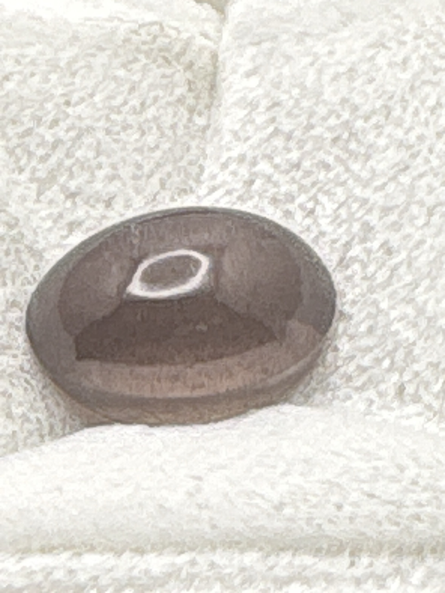

The Gem Drawer › No. 121

A taupe cabochon with a clear pale chatoyant band across the dome.
| Catalogue no. | #121 |
|---|---|
| As labeled | Cat's Eye Scapolite (as labeled) - visible chatoyant band matches label, plausible color and cut |
| Shape / cut | Oval cabochon |
| Weight | 9.00-9.90 (range, per label) |
| Measurements | Not recorded |
| Colour | Grayish-brown / taupe with visible pale chatoyant band |
| Clarity / condition | Not recorded |